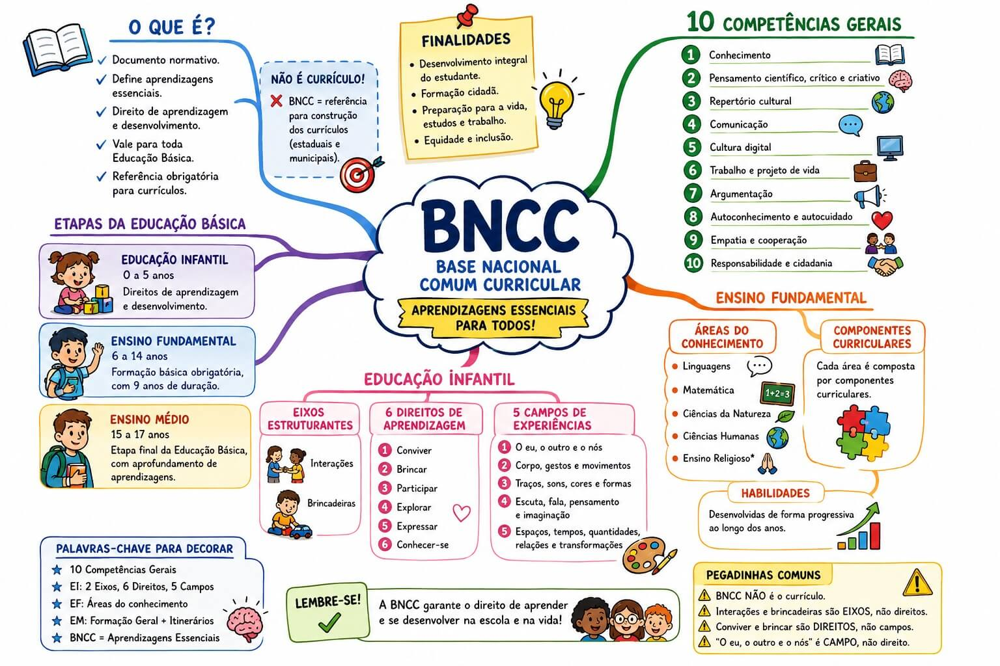

Iluminando o caminho para sua aprovação.
Preencha os dados abaixo.
Iluminando o caminho para a sua aprovação.
Selecione um assunto:
Os conteúdos foram organizados conforme os eixos temáticos do edital da IVIN, com teoria, mapas mentais, questões e treinos próprios da rota.
Este eixo integra fundamentos do ensino, produção do conhecimento histórico, análise documental e uso de diferentes linguagens em sala de aula.
O eixo relaciona formação social, construção do Estado nacional, cidadania, projetos de país, interpretações historiográficas e identidades brasileiras.
O eixo articula escalas históricas, fontes locais, formação da Amazônia, conflitos no Pará, projetos territoriais, populações tradicionais, memória e patrimônio.
O eixo percorre sociedades originárias, conquista, colonizações, diáspora africana, independências, Estados nacionais, relações interamericanas, revoluções, ditaduras e disputas de identidade e memória.
O eixo analisa resistências, movimentos anticoloniais, revoltas do Império, abolição, trabalhadores, povos indígenas, movimento negro, mulheres, juventudes, cultura, memória e construção da cidadania.
O eixo estuda Grécia e Roma em suas diferenças históricas e analisa como democracia, cidadania, filosofia, direito, língua, arte, urbanismo e religião foram reinterpretados em outros períodos.
O eixo analisa a pluralidade medieval, reinos pós-romanos, feudalização, Bizâncio, sociedades islâmicas, cristandade latina, comunidades judaicas, Cruzadas, cidades, universidades e crises dos séculos XIV e XV.
O eixo estuda a pluralidade das sociedades africanas, impérios e redes comerciais, contatos com a Europa, tráfico atlântico, diáspora nas Américas, imperialismo, resistências, descolonização e desafios contemporâneos.
O eixo acompanha a formação histórica do capitalismo, industrialização, movimentos operários, imperialismo, crises, direitos sociais, cultura de massas, globalização e novas formas de trabalho e cidadania.
O eixo integra organização do ensino, planejamento, PPP, sistemas educacionais, avaliação, currículo, BNCC, Constituição Federal, LDB, ECA, o PNE citado no edital e educação inclusiva.
Selecione um assunto:
Selecione um assunto:
Selecione um assunto:
Selecione um assunto:
Selecione um assunto:
Conteúdos organizados conforme os eixos de Ciências do edital, com teoria visual, mapas mentais, questões contextualizadas e treinos próprios da rota.
Estudo das células, da membrana plasmática, das organelas, do núcleo, da morfologia celular, da mitose, da meiose e dos processos de morte celular.
Estudo dos tecidos humanos, organização do corpo, reprodução, gametogênese, fecundação, desenvolvimento embrionário, anexos e gestação.
Selecione um assunto:
Selecione um módulo da trilha, organizado a partir dos itens do edital:
Selecione um assunto:
Selecione um assunto:
Questões Respondidas: 0
Acertos: 0
Erros: 0
Aproveitamento: 0%
Tempo Estudado: 0h 0min
Pontos de Luz: 0
Saldo da Loja: 0
Avatar: 👤 Estudante
Medalha especial: Nenhuma medalha especial
Nível de Luz: 🌱 Nível 1 - Iniciante
Faltam 500 Pontos de Luz para Nível 2 - Cadete. 0% do caminho deste nível🥇 Ouro: 0
🥈 Prata: 0
🥉 Bronze: 0
Faltam 500 Pontos de Luz para o próximo nível.
0% do caminho deste nívelCarregando seu último estudo...
Escolha o concurso.

Escolha o concurso.
Ganhe 100 Pontos de Luz e bônus com bom desempenho.
Barcarena e Abaetetuba permanecem separadas, cada uma com a estrutura da sua prova.
Escolha o cargo.
Resolva a prova original e depois revise pelo gabarito comentado.
Provas reais com gabarito comentado premium.
Português, Informática, Didática e Conhecimentos Específicos de História.
Prova original + gabarito comentado premium.Português, Informática, Legislação e Conhecimentos Específicos de História.
Prova original + gabarito comentado premium.Português, Informática, Didática/Legislação e Conhecimentos Específicos de História.
Prova original + gabarito comentado premium.Português, Informática, Didática/Legislação/ECA e Conhecimentos Específicos de História.
Prova original externa + gabarito comentado premium local.Língua Portuguesa, Conhecimentos Pedagógicos e Conhecimentos Específicos de História.
Prova original oficial externa + gabarito comentado premium local.Provas reais das bancas Ágata e IVIN com gabarito comentado premium.
Português, Informática, Didática/Legislação e Conhecimentos Específicos de Ciências.
Prova original oficial + gabarito comentado premium.Português, Informática, Didática/Legislação e Conhecimentos Específicos de Ciências.
Prova original oficial externa + gabarito comentado premium local.Língua Portuguesa, Conhecimentos Pedagógicos e Conhecimentos Específicos de Ciências.
Prova original oficial externa + gabarito comentado premium local.Língua Portuguesa, Informática Básica e Conhecimentos Específicos de Ciências.
Prova original oficial externa + gabarito comentado premium local.Língua Portuguesa, Informática, Didática/Legislação e Conhecimentos Específicos de Ciências Naturais.
Prova original oficial local + gabarito comentado premium local.Provas reais do Instituto Ágata com gabarito comentado premium.
Português, Informática, Didática/Legislação e Conhecimentos Específicos de Geografia.
Prova original oficial externa + gabarito comentado premium local.Português, Informática, Legislação e Conhecimentos Específicos de Geografia.
Prova original oficial externa + gabarito comentado premium local.Português, Informática, Didática/Legislação e Conhecimentos Específicos de Geografia.
Prova original oficial local + gabarito comentado premium local.Português, Informática, Didática/Legislação e Conhecimentos Específicos de Geografia.
Prova original oficial local + gabarito comentado premium local.Provas reais de nível médio/apoio escolar com gabarito comentado premium.
Língua Portuguesa, Informática Básica e Conhecimentos Específicos ligados ao cuidado, inclusão e rotina escolar.
Prova original oficial externa + gabarito comentado premium local.Língua Portuguesa, Informática, Didática/Legislação e Conhecimentos Específicos de Apoio Escolar.
Prova original oficial externa + gabarito comentado premium local.Escolha uma categoria.
Escolha um jogo.
Escolha entre o desafio por convite, que já funciona normalmente, e a nova Arena do Farol ao vivo.
Os bancos e as permissões ficam separados entre Barcarena e Abaetetuba.
Toque em uma disciplina para ver apenas os tópicos dela.
Nenhuma disciplina selecionada.
Recebeu um código de outro aluno? Digite abaixo para entrar no desafio.
Depois de criar o duelo, você pode copiar o código ou compartilhar o convite diretamente pelo WhatsApp e outros aplicativos.
Aqui aparecem os duelos que você criou ou entrou. Você pode continuar, ver resultado, compartilhar o código ou ocultar da lista.
A missão muda automaticamente a cada dia. Complete o desafio de hoje e ganhe Pontos de Luz.
Escolha uma opção.
Escolha uma disciplina.
Escolha uma opção.
Compartilhe dúvidas e ajude outros alunos.
Converse com os alunos online.
Esta área é restrita. Somente o administrador autorizado pode continuar.
Consulte os alunos já liberados, edite cargos ou autorize uma nova conta.